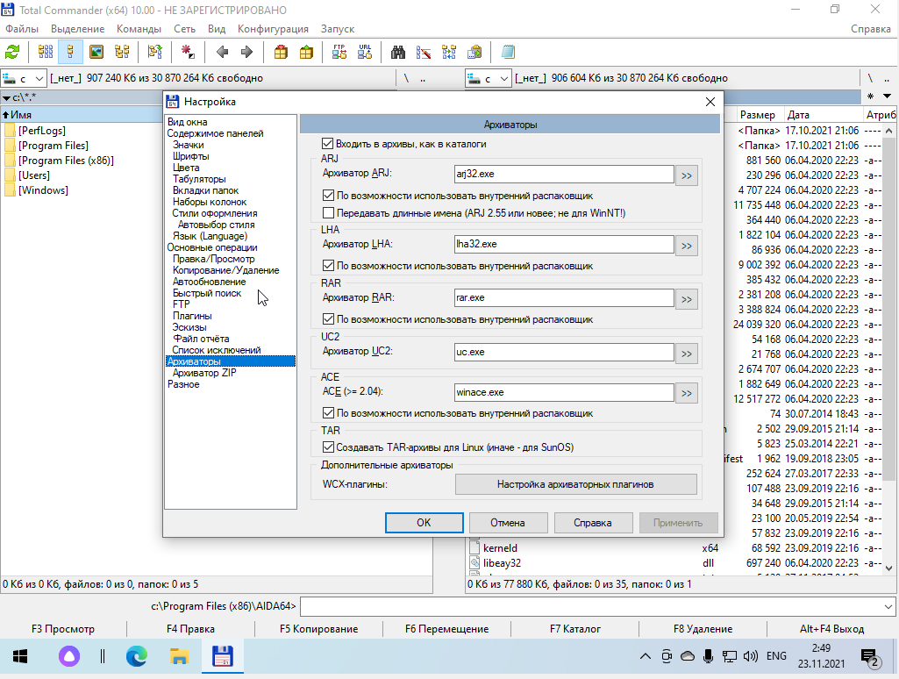

Total Commander является профессиональным файловым менеджером, который используется в качестве достойной альтернативы для обычного проводника. Первый выпуск программы произошел в 1993 году 25 сентября, после Total Commander хорошо себя зарекомендовал, как файловый менеджер с большими возможностями.
Основные возможности:
- Разделение экрана
- Мгновенный переход между дисками
- Возможность использования горячих клавиш
- Детальная настройка. Можно изменить интерфейс проводника, выбрать интересные иконки, шрифты и цветовую гамму оформления
- Быстрый поиск. Можно активировать средство быстрого поиска файлов по названию или содержимому
- Встроенный FTP-клиент. Можно быстро подключиться к личному сайту для удаленной работы с файлами
- Отображение файлов без каталога
- Встроенный zip-архиватор
Рассмотрим интерфейс и основные функции программы.
Подключение к FTP-серверу
Основные настройки и изменение внешнего вида
Настройка архиваторов

Настройка вида и отображения файлов